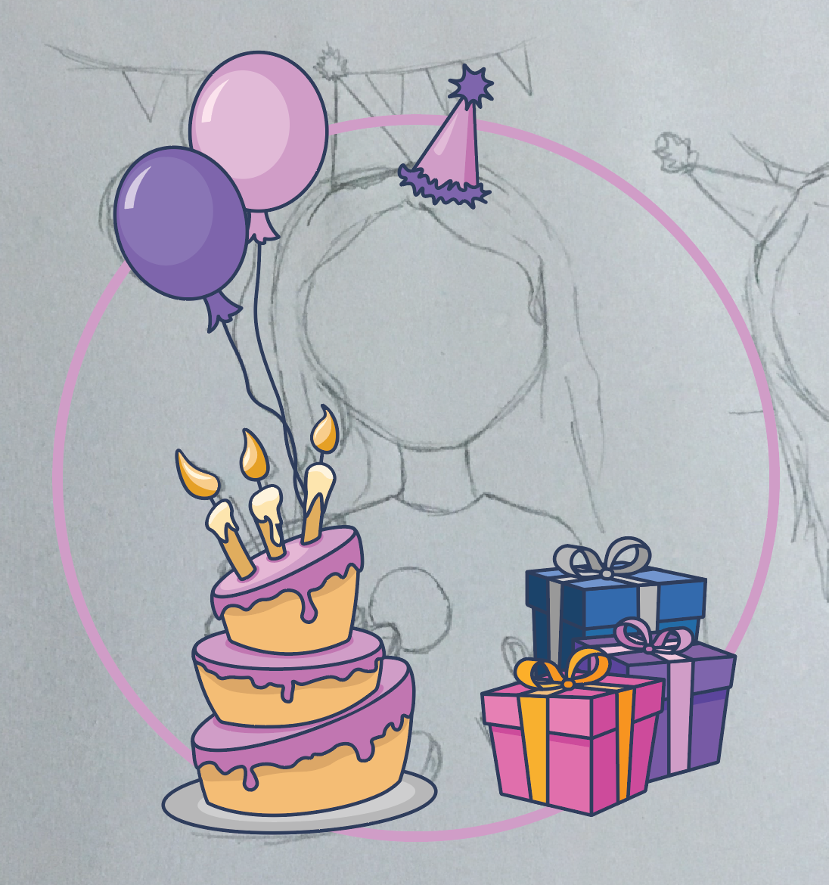

Special Occasicons
Creating a digital product, a set of 12 icons and promotional website that inspires users to create their own stories.
Visit Website





Visit the Website!
Creating a digital product, a set of 12 icons and promotional website that inspires users to create their own stories.
Visit Website